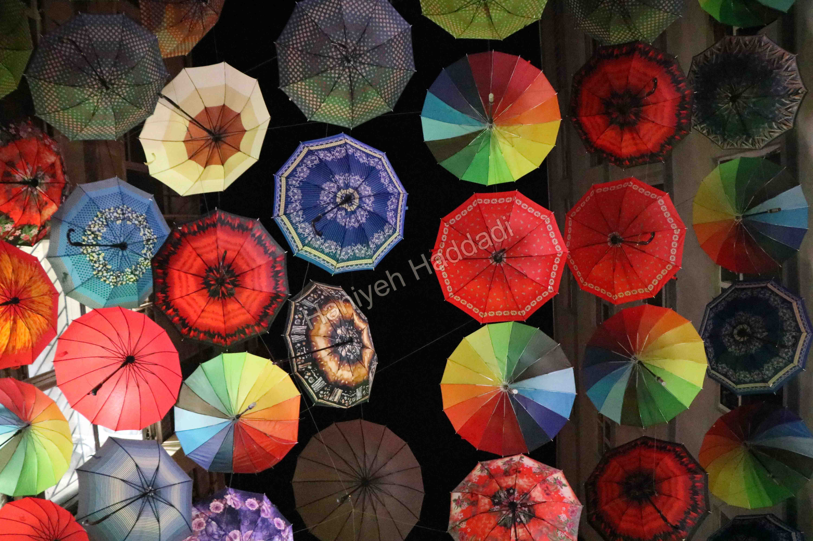
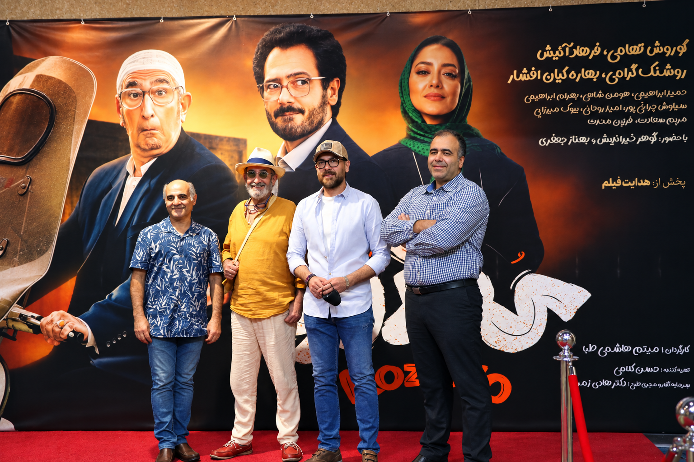
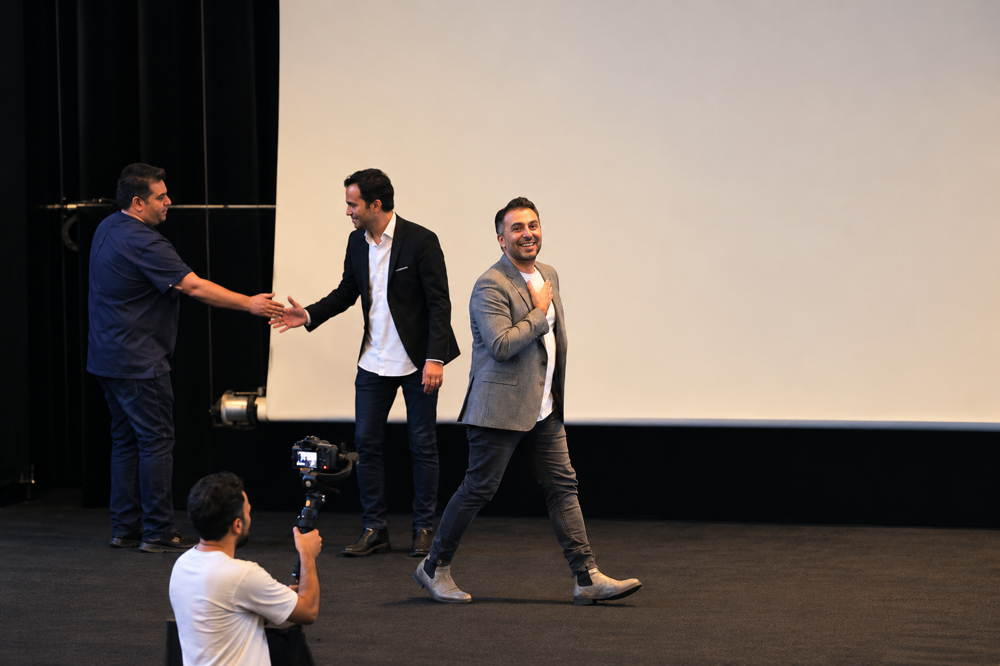
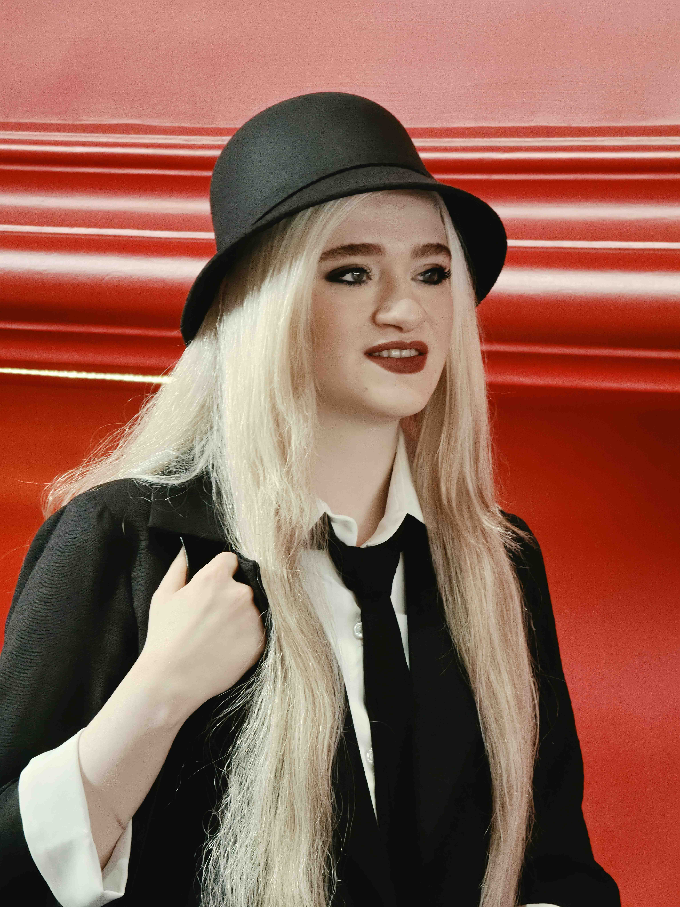
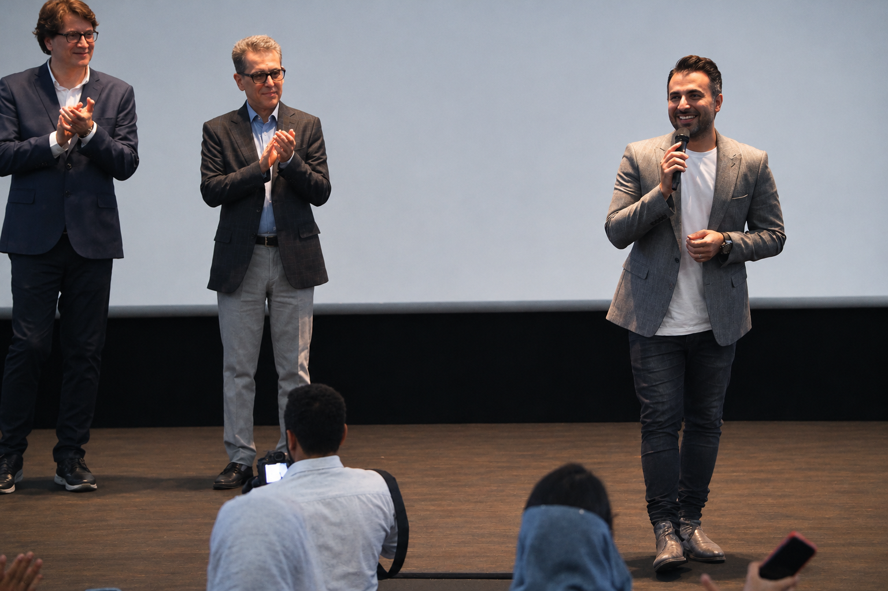
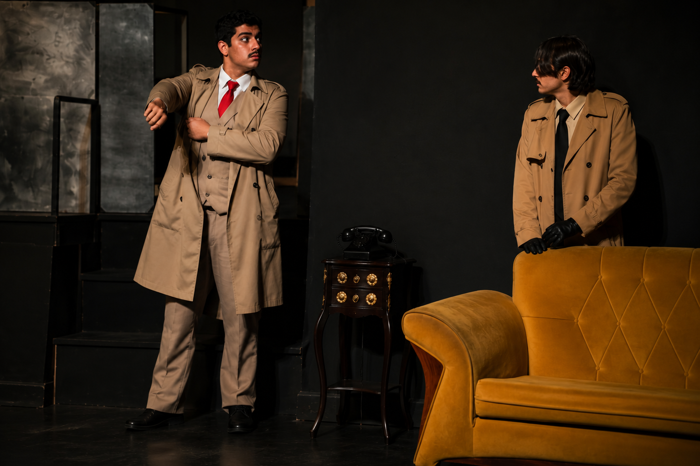

روایت یک هنر
عکاسی پانوراما
PHOTOGRAPHY & GRAPHIC DESIGN
مجموعهای از تجربهها، نگاه من به تصویر و پروژههای عکاسی و طراحی گرافیک.




01 / PHOTOGRAPHY
پرترهها و لحظههایی که از نگاه من ثبت شدهاند.
عکاسی پانوراما

عکاسی هنری

عکاسی معماری

عکاسی پرتره

عکاسی خبری

عکاسی تئاتر
02 / GRAPHIC DESIGN
مجموعهای از آثار و پروژههای طراحی گرافیک من.
03 / ABOUT ME
من حانیه حدادی هستم؛ عکاس و طراح گرافیک، با علاقهای عمیق به دنیای تصویر و روایتهای بصری.
برای من، عکاسی فقط ثبت یک لحظه نیست؛ راهی برای دیدن جزئیاتی است که شاید در نگاه اول از چشم پنهان بمانند. در طراحی گرافیک نیز تلاش میکنم ایدهها را به تصویرهایی تبدیل کنم که معنا، احساس و هویت مشخصی داشته باشند.
تجربهام در هنرهای تجسمی و نگارگری، نگاه من به ترکیببندی، جزئیات و زیباییشناسی را شکل داده است. در پروژههای عکاسی و طراحی، به دنبال ایجاد تعادلی میان خلاقیت، دقت و روایت هستم.
در این وبسایت، مجموعهای از پروژهها و تجربههای من را میبینی؛ آثاری که هرکدام بخشی از مسیر هنری و نگاه شخصی من به تصویر را بازتاب میدهند.
04 / CONTACT
برای سفارش عکاسی، طراحی گرافیک و همکاری با من در ارتباط باش.